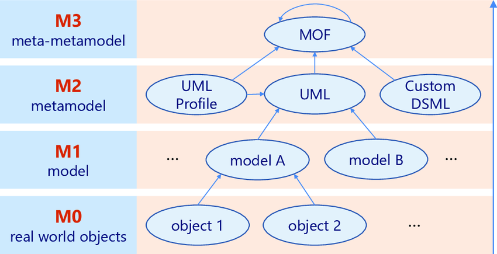
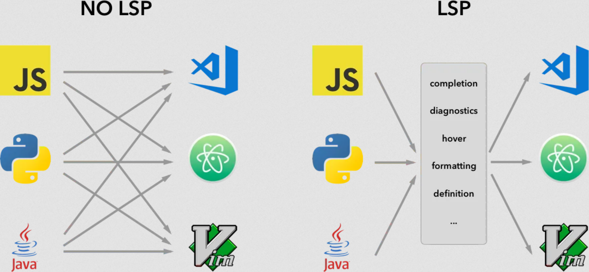

Model Driven Development
Lecture goals
- Understand metamodelling
- Understand domain specific languages
- Practice with model driven development in Xtext
Meta-modelling nomenclature
-
(Abstract) Language $\approx$ (abstract) syntax + semantics
-
Model $\approx$ the abstract language by which we describe the possible entities involved in a domain
- the model abstracts a number of similar systems rooted in the domain
- each system is an instance of the model it has been designed from
- a model is a template for several systems
-
In which language is the model expressed?
- Meta-model $\approx$ the abstract language by which we describe models
- for instance UML is the meta-model behind object-oriented programming
- UML $\equiv$ Unified Modeling Language
-
In which language is the meta-model expressed?
- Meta-meta-model $\approx$ the abstract language by which we describe meta-models
- for instance MOF is the meta-meta-model behind UML according to OMG
- MOF $\equiv$ Meta-Object Facility
- OMG $\equiv$ Object Management Group
Meta-model hierarchy
cf. https://www.omg.org/ocup-2/documents/Meta-ModelingAndtheMOF.pdf

Meta-model hierarchy example

Why are meta-models important?
-
Meta-models are the very first thing you should try to identify whenever approaching a new technology
-
If you grasp the meta-model, you grasp the essence of the technology
- which may be same for many other technologies
-
E.g. after you learned the basics of OOP (classes, methods, objects, etc.) you may easily learn any other OOP language
- by simply asking yourself how each meta-model element is expressed in the new language
- e.g. how are classes / methods / objects expressed in the new language?
- by simply asking yourself how each meta-model element is expressed in the new language
-
When you model a domain (e.g. with DDD) you are always exploiting some meta-model
- whether you are aware of it or not
Model-driven whatever
-
Several, slightly similar names, make create confusion
- e.g. model-driven engineering / development / architecture / etc.
-
Please read Martin Fowler’s article on Model-Driven Software Architecture to clarify
-
Despite the name the key ideas can be summarised as follow:
-
software engineering workflow should start by modelling the domain at hand carefully
- e.g. with DDD
- as opposed to focussing on algorithms and data structures
-
the production of a runnable implementation should be automated as much as possible
- e.g. by generating code from models
- as opposed to writing code by hand
-
About code generation from models
-
Assumption: the model is expressed by means of some formal language
-
Formal language $\approx$ interpretable by a machine
-
Formality is a prerequisite for automation
- the model is parsed by a machine
- the model is transformed into another formal language (e.g. OO programming language)
- the transformed model is rendered into a file (e.g. source code)
-
Is UML adequate? Is it the only choice? Any alternative?
- UML has a formal syntax and semantics (reified into graphical representation rules)
- rarely enforced by software tools
- furthermore UML is general-purpose
- only practical for software engineers
Towards domain specific languages
-
Domain-specific Languages (DSL) are programming / description / specification languages targetting one particular class of problems
- e.g. they are not meant to address all possible problems, but just the ones they are designed for
-
As opposed to general-purpose languages (GPL) which are targetting as many classes of problems as possible
- the programming languages you learned so far are GPL
-
DSL may act as custom meta-models for a given domain
-
Examples of DSLs you may already know:
- regular expressions for text processing
- SQL for database querying
- CSS for styling web pages
- HTML for describing web pages content
- DOT for graph visualisation
- PlantUML for UML diagrams visualisation
- Gherkin for Behavior-Driven Development (BDD)
- VHDL for hardware description
DSL Examples (pt. 1)
DOT: a DSL to visualise graphs
digraph G {
size ="4,4";
main [shape=box];
main -> parse [weight=8];
parse -> execute;
main -> init [style=dotted];
main -> cleanup;
execute -> { make_string; printf}
init -> make_string;
edge [color=red];
main -> printf [style=bold,label="100 times"];
make_string [label="make a string"];
node [shape=box,style=filled,color=".7 .3 1.0"];
execute -> compare;
}

-
DOT is a language that can describe graphs, for the sake of their visualisation
-
The most common implementation is the Graphviz toolkit
DSL Examples (pt. 2)
PlantUML: a DSL to visualise UML diagrams
interface Customer { + CustomerID getID() + String getName() + void **setName**(name: String) + String getEmail() + void **setEmail**(email: String) }note left: Entity
interface CustomerID { + Object getValue() } note right: Value Object
interface TaxCode { + String getValue() } note left: Value Object
interface VatNumber { + long getValue() } note right: Value Object
VatNumber -d-|> CustomerID TaxCode -d-|> CustomerID
Customer *-r- CustomerID
interface Customer { + CustomerID getID() + String getName() + void setName(name: String) + String getEmail() + void setEmail(email: String) } note left: Entity
interface CustomerID { + Object getValue() } note right: Value Object
interface TaxCode { + String getValue() } note left: Value Object
interface VatNumber { + long getValue() } note right: Value Object
VatNumber -d-|> CustomerID TaxCode -d-|> CustomerID
Customer *-r- CustomerID
DSL Examples (pt. 3)
Gherkin: a DSL to write BDD tests in a human-friendly way
Scenario: Verify withdraw at the ATM works correctly
Given John has 500$ on his account
When John ask to withdraw 200$
And John inserts the correct PIN
Then 200$ are dispensed by the ATM
And John has 300$ on his account
-
Gherkin is a language that can describe behavioural tests for software systems
- i.e. what system should do in given scenario
-
Syntax if very flexible and it seems like natural language
-
Stakeholders and engineer will agree on a set of behavioural specifications for the system
- written in Gherking
-
The most common implementation is Cucumber
- allowing the semi-automated translation of Gherkin specifications into executable tests
DSL Examples (pt. 4)
VHDL: a DSL to design hardware circuits
DFF : process(RST, CLK) is
begin
if RST = '1' then
Q <= '0';
elsif rising_edge(CLK) then
Q <= D;
end if;
end process DFF;
-
VHDL is a language that can describe hardware circuits
- i.e. the logic gates and their interconnections
-
Seems like an ordinary programming language, but:
- “variables” are indeed signals
- “functions” are indeed circuits
-
Technologies exist to automatically translate VHDL into hardware circuits
- e.g. Xilinx Vivado
-
… or to simulate the behaviour of the circuit (either in software or in FPGA)
DSL Examples (pt. 5)
Strumenta’s DSL for financial accounting
Details here: https://tomassetti.me/financial-accounting-dsl
Goal: use a DSL to describe taxes, pension contributions, and general financial calculations
pension contribution InpsTerziario paid by owner {
considered_salary = (taxable of IRES for employer - amount of IRES for employer - amount of IRAP for employer) by ownership share
rate = brackets [to 46,123] -> 22.74%,
[to 76,872] -> 23.74%,
[above] -> 0%
amount = (rate for considered_salary) with minimum 3,535.61
}
pension contribution InpsGLA paid by employer 2/3 and employee 1/3 {
considered_salary = gross_compensation of employee
rate = brackets [to 100,323] -> 27.72%,
[above] -> 0%
amount = rate for considered_salary
}
Benefits of adopting DSL
-
To communicate with domain experts in their own language
- e.g. Gherkin is a language that can be understood by both engineers and stakeholders
-
To let domain experts write the specifications (i.e. the model) of the system they want
- hence reducing ambiguities among stakeholders and engineers
-
To focus on the domain rather than on the implementation
-
To hide the implementation details from the domain experts
- e.g. exposing only business-related concepts, at the domain level
DSL vs. GPL
-
DSLs are not a replacement for GPLs
- they are complementary
-
Yet the difference is fuzzy, so lets try to clarify:
| GPL | DSL | |
|---|---|---|
| Domain | any | clear boundary |
| Syntactical constructs | many and composable | few and static |
| Expressiveness | Turing-complete | possibly, less than Turing-complete |
| Customisability | maximised | minimised / confined / absent |
| Defined by | companies or committees | teams of domain expertes |
| User base | large, anonymous, widespread | small, accessible, local |
| Evolution | slow, well-structured | fast-paced |
| Deprecation | very slow | feasible, often abrupt |
DSL Engineering
Semantics of DSL
-
Most often, the focus is on the syntax of the DSL
- as that’s how users will perceive it
-
Yet, the semantics of the DSL is equally important
- that dictates how the DSL works
- and this is what engineers (DSL implementers) focus upon
-
Intuitively, semantics is given to languages by writing the machinery supporting their execution
- three main aspects:
- conversion into runnable code (e.g. translation or interpretation) …
- … leveraging onto a execution engine (i.e. library functionalities supporting the runnable code) …
- … in turn relying on a software platform (e.g. JVM, .NET, etc.)
- three main aspects:
The role of DSL engineers mostly focuses on steps 1 & 2 (other than defining the syntax)
Converting DSL into runnable code
Two main approaches:
-
Translation: translates a DSL script into a language for which an execution engine on a given target platform exists
- a.k.a. code generation or transpilation if the target language is high-level (e.g. Java, JS, or C#)
- e.g. Xtend, or TypeScript, despite being GPL, are transpiled into Java and JS respectively
- a.k.a. compilation if the target language is low-level (e.g. assembly, JVM bytecode, CRL, etc.)
- e.g. Java is compiled into JVM bytecode (despite being a GPL)
- a.k.a. code generation or transpilation if the target language is high-level (e.g. Java, JS, or C#)
-
Interpretation: the execution engine is able to parse and execute the DSL script directly
- a.k.a. runtime interpretation or runtime compilation if the execution engine is able to compile the DSL script into a runnable code
- e.g. 2P-Kt is a GPL interpreted by a custom execution engine, written in Kotlin, running on the JVM
- a.k.a. runtime interpretation or runtime compilation if the execution engine is able to compile the DSL script into a runnable code
In both cases, there are technical prerequisites:
- a parser for the actual syntax of the DSL should exist / be generated
- the execution engine for the target platform should exist
External vs. internal DSL
-
So far we discussed the so-called external DSLs
- i.e. where the syntax is totally custom, hence requiring a custom parser
-
As opposed to internal (a.k.a. embedded) DSLs
- i.e. where the syntax is a subset of some pre-existing GPL…
- … whose syntax is flexible enough to allow costimisation
-
Creating internal DSL is a recent trend enabled by the wide adoption of flexible GPL
- e.g. Kotlin, Groovy, or Scala, which come with ad-hoc constructs
- e.g. trailing-lambda convention, infix notation, operator overloading, etc.
- e.g. Kotlin, Groovy, or Scala, which come with ad-hoc constructs
-
Examples of internal DSL you may already know:
-
More on this topic will be introduced by prof. Pianini in future lectures
Example of internal DSL: build.gradle.kts
plugins {
`java-library`
}
dependencies {
api("junit:junit:4.13")
implementation("junit:junit:4.13")
testImplementation("junit:junit:4.13")
}
configurations {
implementation {
resolutionStrategy.failOnVersionConflict()
}
}
sourceSets {
main {
java.srcDir("src/core/java")
}
}
java {
sourceCompatibility = JavaVersion.VERSION_11
targetCompatibility = JavaVersion.VERSION_11
}
tasks {
test {
testLogging.showExceptions = true
useJUnit()
}
}
- domain: build-automation
- this is pure Kotlin + Gradle library (containing an “execution engine”)
- Gradle library is designed to be used as Kotlin DSL
Key aspects of internal DSL
-
Internal DSL may ease adoption of the DSL it self
- users may already know the GPL
- hence they may be able to use the DSL without learning a new language
- hence they may use the same toolkits available for the GPL (e.g. debugger, IDE, etc.)
- users may already know the GPL
-
Internal DSL simplify the DSL engineering process
- no need to write and maintain a custom parser
- as the parser is already provided by the GPL
- no need to write and maintain custom toolkits
- as the GPL toolkits may be reused
- no need to write and maintain a custom parser
-
The integration among the GPL and the DSL is tight
- the DSL may exploit the constructs of the GPL, and this is commonly desired
- the DSL is technologically and syntactically bound to the GPL, and this is commonly undesired
About the execution engine
-
Be it internal/external or transpiled/interpreted, the DSL needs an execution engine
- i.e. a library providing the functionalities of the DSL
-
This is no different from any other library supporting some given domain
-
Except that hacks could exploit to ease the adoption of the target DSL syntax
MDD in Practice
Tools for MDD
-
Eclipse’s Xtext widespread tool for MDD
-
JetBrains’ MPS main competitor of Xtext
-
Langium clone of Xtext, but based on TypeScript
Other relevant tools for language engineering
-
ANTLR only parser generation for Java, JS, Python, .Net, C++
-
Language Server Protocol (LSP)
Key idea behind LSP

-
de-facto standard protocol among IDEs
-
providing various IDE-like capabilities as-a-service
-
making it easier to support multiple IDEs for the same language
-
must-have feature for any MDD tool we may consider for our DSL
About Xtext
-
A framework for MDD and in particular domain-specific languages
-
Xtext provides a language for definining languages…
-
… which is also a meta-modelling language
-
Meta-modelling and DSL definition are done simultaneously
-
It automatically generates the full language infrastructure, including
- model interfaces / classes (EMF compliant)
- parser
- validator (with pluggable rules)
- transpiler stub
- scoping (with pluggable rules)
- IDE support via LSP
- syntax colouring
- etc.
- test stubs
-
Exercises and examples about MDD will be based on Xtext